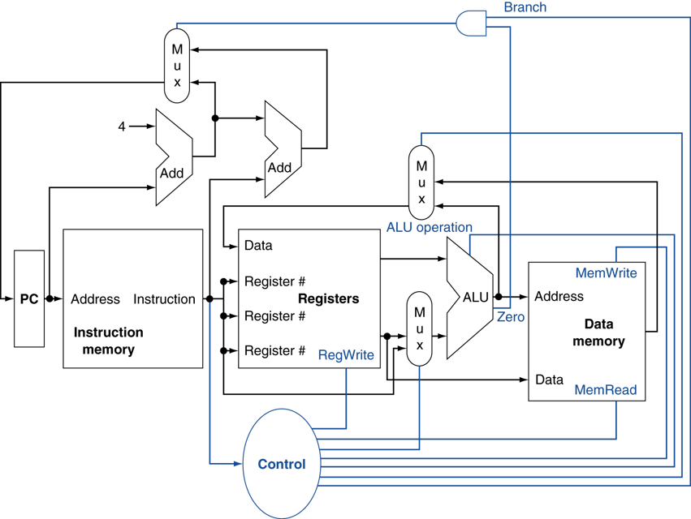

Computer Architecture
[TOC]
Datapath
Datapath without control signal

Datapath with control signal

Instruction Set
Format
R-type

add rd, rs, rt
sub rd, rs, rt
and rd, rs, rt
or rd, rs, rt
slt rd, rs, rt
I-type
lw rt, rs, imm16
st rt, rs, imm16
addi rt, rs, imm16
beq rt, rs, imm16
J-type

j target
Pipelining
Executing multiple instructions in parallel, to increase ILP:
Deeper pipeline
Less work per stage => shorter clock cycle
Multiple pipeline
Replicate pipeline stages => multiple pipelines
Start multiple instructions per clock cycle
CPI < 1
Static multiple issue
Compiler groups instructions to be issued together
Packages them into “issue slots”
Compiler detects and avoids hazards
Scheduling static multiple issue
Compiler must remove some/all hazards
Reorder instructions into issue packets
No dependencies with a packet
Possibly some dependencies between packets
Pad with nop if necessary
Example, MIPS with static dual issue
Address
Instruction type
CC1
CC2
CC3
CC4
CC5
CC6
CC7
n
ALU/branch
IF
ID
EX
MEM
WB
n + 4
Load/store
IF
ID
EX
MEM
WB
n + 8
ALU/branch
IF
ID
EX
MEM
WB
n + 12
Load/store
IF
ID
EX
MEM
WB
n + 16
ALU/branch
IF
ID
EX
MEM
WB
n + 20
Load/store
IF
ID
EX
MEM
WB
Dynamic multiple issue
CPU examines instruction stream and chooses instructions to issue each cycle
CPU resolves hazards using advanced techniques at runtime
Compiler can help by reordering instructions
Allow the CPU to execute instructions out of order to avoid stalls, but commit result to register in order
Dynamically scheduled CPU

Example, can start sub while addu is waiting for lw
lw $t0, 20($s2) addu $t1, $t0, $t2 sub $s4, $s4, $t3 slti $t5, $s4, 20
Single cycle datapath
IF(Instruction Fetch)
ID(Instruction Decode and register file read)
EX(Execution or address calculation)
MEM(Data memory access)
WB(Write back)
Multiple cycle datapath
Pipeline datapath
Hazard
Data hazard
WAR
WAW
RAW
Control hazard
Structure hazard